We seek to relate landslide locations to measurable attributes of the terrain. Available data for characterizing landslide locations on Wrangell Island are provided by the Tongass National Forest landslide inventory. Available data for characterizing terrain attributes include a lidar-derived DEM and the Tongass National Forest datasets on soils, land cover, and history of forest activities. The types of terrain attributes associated with landsliding can be inferred from physical models of slope instability and from the results of other empirical studies of landslide susceptibility. These studies point to a set of key topographic attributes: slope gradient, local curvatures, and upslope contributing area, all of which can be measured directly or inferred from the DEM. Properties of the soil, including depth, porosity, bulk density, hydraulic transmissivity, friction angle, and cohesion, also play key roles. These properties are not measurable with remotely sensed data, but variations in these properties may be inferred from soil-type mapping.
Landslide Locations
The Tongass NF landslide inventory provides polygons indicating mapped landslide-scar boundaries. These include both the initiation, runout, and deposition zones.
Reading layer `LS_Polys_Noroad' from data source
`C:\Work\Data\Wrangell\LS_Polys_Noroad.shp' using driver `ESRI Shapefile'
Simple feature collection with 226 features and 30 fields
Geometry type: POLYGON
Dimension: XY
Bounding box: xmin: 898112 ymin: 479610.9 xmax: 925718.6 ymax: 516634.6
Projected CRS: NAD83 / Alaska zone 1
Reading layer `basin_stateplane' from data source
`C:\Work\Data\Wrangell\basin_stateplane.shp' using driver `ESRI Shapefile'
Simple feature collection with 1 feature and 5 fields
Geometry type: POLYGON
Dimension: XY
Bounding box: xmin: 896944.2 ymin: 477795.4 xmax: 927059.1 ymax: 519093.1
Projected CRS: NAD83 / Alaska zone 1
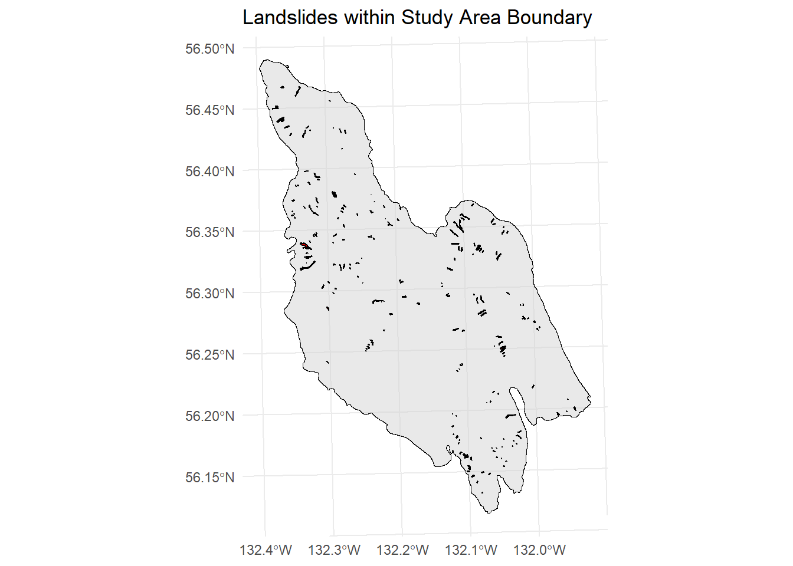
Figure 1: Landslide polygons mapped within Wrangell Island
Here we focus solely on the initiation zones. An initiation zone for each polygon is estimated by extracting the upper portion of the polygon extending a distance downslope from the top equal approximately to the width of the polygon. This is done in code chunk (LS_poly?) with program LS_poly.
As shown in Figure 2, these initiation zones span a range of widths from 10 to 120 meters, with a mean of 30 meters.
Code
library(ggplot2)library(patchwork)initStats <-as.data.table(read.csv(paste0(outCSV, "_init.csv")))boxarea <-ggplot(initStats, aes(y=sqrt(Area_m2))) +geom_boxplot() +labs(y ="Sqrt(Area)") +theme(axis.text.x =element_blank(),axis.ticks.x =element_blank())cumarea <-ggplot(initStats, aes(x=sqrt(Area_m2))) +stat_ecdf(geom="step") +labs(x ="Sqrt(Area)",y ="Proportion of Initiation Zones")boxwidth <-ggplot(initStats, aes(y=Width_m)) +geom_boxplot() +labs(y ="Width (m)") +theme(axis.text.x =element_blank(),axis.ticks.x =element_blank())cumwidth <-ggplot(initStats, aes(x=Width_m)) +stat_ecdf(geom="step") +labs(x ="Width (m)",y ="Proportion of Initiation Zones")pwidth <- (boxarea + cumarea) / (boxwidth + cumwidth)pwidth <- pwidth +plot_annotation(title ="Estimated Width of Initiation Zones" ,caption ="Width (m) is estimated as the square root of the initiation-zone area, shown in the upper panels, and the average width of the entire landslide polygon, shown in the lower panels")pwidth
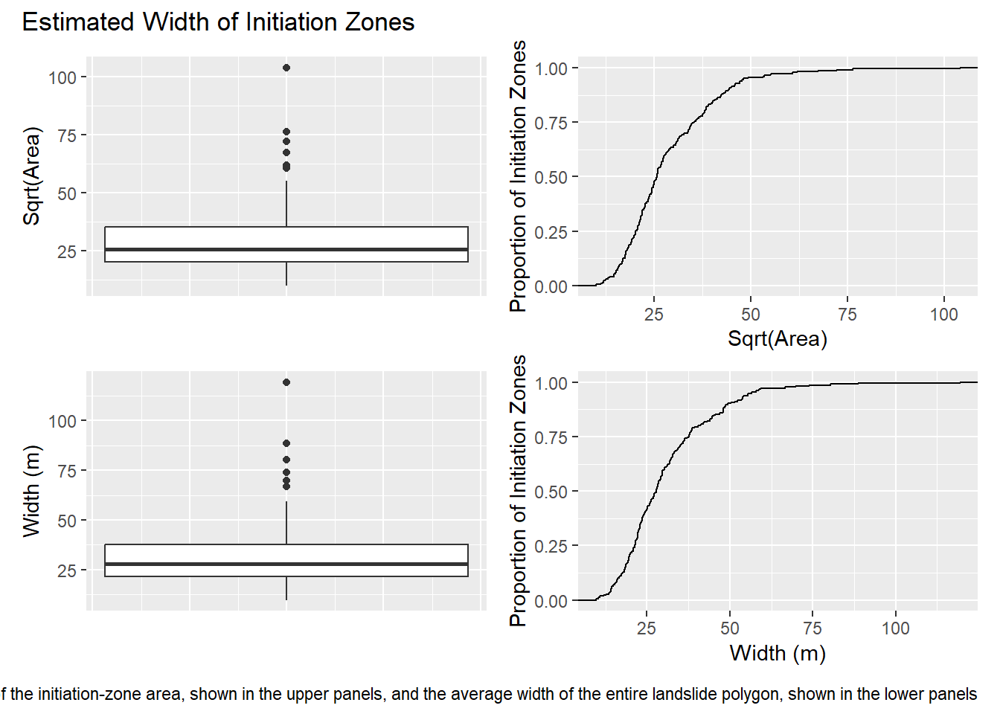
Figure 2
Topographic Indices
We can calculate a variety of topographic indices using the lidar DEM. As mentioned above, topographic attributes expected to be associated with landslide initiation zones include slope gradient, curvature, and flow accumulation. Gradient and curvature are scale-dependent, in that the value can vary with the length over which they are measured. These properties of the topography influence patterns and rates of movement for water and colluvium, thus influencing the depth of soil and the depth of soil saturation during rainstorm and snowmelt events. The pertinent length scales over which these patterns influence soil stability are reflected in the size distribution of the initiation zones. I calculated gradient and curvatures over a 30-meter length, equal to the mean of the initiation-zone widths (Figure 2).
The upslope flow-accumulation zone provides a relative measure of the amount of water flowing to the area represented by a DEM cell during rainstorms. Once subsurface flow through the soil reaches steady state, the discharge of water through a DEM cell is the upslope accumulation area times the rainfall intensity. This steady-state condition may never actually be achieved, so it may be informative to look at accumulation zones associated with storms of a fixed duration. These are calculated with program Partial, which I have prerun for a range of storm durations from 6 to 72 hours. This is an approximate solution using Darcy flow velocity for shallow subsurface flow, assuming that saturated water flow through the soil is parallel to the ground surface and ignoring the time for water to infiltrate to the saturated zone.
I also examine predictions of a simple physical model as a potential predictor, using the Factor of Safety FoS calculated with the infinite slope model assuming uniform soil properties. This model is an abstraction of actual physical conditions that ignores many factors pertinent to soil failure, so the modeled values may not provide a direct estimate of how landslide potential varies spatially. It does, however, provide a single-valued function that incorporates both slope gradient and flow accumulation. I’ll examine the FoS calculated using flow accumulation rasters generated for a 6-hour and 72-hour storm.
There are several options for exploring the degree to which different indices are associated with landslide initiation zones. A starting point is to look at the frequency distribution of index values both inside the initiation zones and over the entire study area. The degree to which these differ indicates the degree to which an index can differentiate initiation zones from the area in general. These distributions are plotted below using both bar plots and cumulative distributions.
To calculate these distributions, I masked the study area to include only those areas that fell within the range of gradient, FoS, and curvature values found within the initiation zones. Values outside of these zones have a landslide density of zero, based on this inventory. I want to focus on those areas of the landscape where landslide density is greater than zero.
For areas falling within any increment of an index value, the proportion of that area that is within the intiation zones provides a measure of landslide density for that increment. Program SamplePoints will extract these areas for each index. The following code chunks run SamplePoints and generate a series of plots showing histograms and cumulative frequency distributions of variable values both inside the initiation zones and over the entire study area. The landslide density associated with each binned inverval of variable values is also shown, with a smoothed line fit through the points. Density is calculated as the initiation-zone area divided by the total area within each interval range. The same vertical scale is used for all the density plots so that they can be compared directly.
Code
# Run sample points to build a raster masking zones outside the range of predictor values# associated with landslide initiation zones. Edit input variables as neededwork <-"c:/work/data/wrangell/"inRaster <-paste0(dataFolder,"init") # initiation zones, raster created by LS_poly aboveareaPerSample <-10000.# within initiation zones, one point every areaPerSample square metersbuffer_in <-10.# buffer around sample points inside initiation zones, in metersbuffer_out <-3.# buffer around sample points outside initiation zonesmargin <-1.# margin around initiation zones to preclude sample points close to the edge, in metersratio <-3000.# ratio of sample points outside initiation zones to those withinnbins <-100# number of bins for building histogramsminPatch <-100000.inPoints <-paste0(dataFolder, "inpoints1000")outPoints <-paste0(dataFolder, "outpoints") # used below for spatstatoutInit <-paste0(dataFolder, "initMod")outInitPoints <-paste0(dataFolder, "initPoints")table <-paste0(dataFolder, "table")scratchDir <-"c:/work/scratch"executableDir <-"c:/work/sandbox/landslideutilities/projects/samplepoints/x64/release"returnCode <- TerrainWorksUtils::samplePoints( inRaster, areaPerSample, buffer_in, buffer_out, margin, ratio, nbins, R4rasters, I4rasters, minPatch, inPoints, outPoints, outMask, outInit, outInitPoints, table, scratchDir, executableDir)if (returnCode !=0) {stop("Error in samplePoints, return code: ", returnCode)}
Code
library(data.table)library(ggplot2)pcum_in1 <-vector(mode ="list", length =length(R4rasters))pcum_out1 <-vector(mode ="list", length =length(R4rasters))pdif1 <-vector(mode ="list", length =length(R4rasters))pbar1 <-vector(mode ="list", length =length(R4rasters))pbar_in1 <-vector(mode ="list", length =length(R4rasters))pbar_out1 <-vector(mode ="list", length =length(R4rasters))density <-vector(mode ="list", length =length(R4rasters))dencum <-vector(mode ="list", length =length(R4rasters))rocplot <-vector(mode ="list", length =length(R4rasters))auc <-data.table(name=character(), val=numeric())roc_dt <-data.table()xrange <-data.table(start=numeric(),end=numeric())for (i in1:length(R4rasters)) { name <- R4rasters[[i]][[1]] d_in <-as.data.table(read.csv(paste0(table, "_", name, "_in.csv"))) d_out <-as.data.table(read.csv(paste0(table, "_", name, "_out.csv"))) sum_in <- d_in[, sum(Number)] sum_out <- d_out[, sum(Number)] pbar1[[i]] <-ggplot() +geom_bar(data=d_in, aes(x = Mid, y = Number/sum_in, fill ="Inside"), stat ="identity",alpha =0.6) +geom_bar(data=d_out,aes(x = Mid, y = Number/sum_out, fill ="Outside"),stat ="identity",alpha =0.6) +labs(x = name,y ="Proportion") +theme(legend.title =element_blank(),legend.position ="inside",legend.position.inside =c(0.9, 0.7),legend.background =element_rect(fill ="transparent"),axis.title.x =element_blank(),axis.text.x =element_blank()) pdif1[[i]] <-ggplot() +geom_line(data=d_in, aes(x=Upper, y = CumulativeProp, color ="Inside"),linewidth =1.2) +geom_line(data=d_out,aes(x = Upper, y = CumulativeProp, color ="Outside"),linewidth =1.2) +labs(x = name,y ="Cumulative Proportion") +theme(legend.title =element_blank(),legend.position ="inside",legend.position.inside =c(0.85, 0.4),legend.background =element_rect(fill ="transparent"),axis.title.x =element_blank(),axis.text.x =element_blank())# Calculate density as area of initiation zone per unit area of the study area (the masked area) den <- d_in[, .(Upper, Number)] den <- den[, Nout := d_out[, Number]] den <- den[Nout >0, ] den <- den[, density := Number/Nout] xrange <-rbind(xrange, list(min(den$Upper),max(den$Upper)))# Generate an ROC curve roc <- den[, .(density, Number, Nout)] roc <- roc[density >0,] roc <- roc[order(-density)] roc <- roc[, tpr :=rev(cumsum(Number))] # true positive rate tprmax <-max(roc$tpr) roc <- roc[, tpr := tpr/tprmax] roc <- roc[, fpr :=rev(cumsum(Nout))] # false positive rate fprmax <-max(roc$fpr) roc <- roc[, fpr := fpr/fprmax] roc <- roc[, Index :=as.factor(name)] roc_dt <-rbind(roc_dt,roc)# Calculate area under the ROC curve s =0for (j in1:(nrow(roc)-1)) { s_tpr <- (roc[j]$tpr + roc[j+1]$tpr) /2 s_fpr <- roc[j]$fpr - roc[j+1]$fpr s <- s + (s_tpr * s_fpr) } thisname <- R4rasters[[i]][1] auc <-rbind(auc, list(thisname, s)) density[[i]] <-ggplot(data=den) +geom_point(aes(x=Upper, y=density), shape =1, size =2.8) +geom_smooth(aes(x=Upper,y=density), method="loess",se=FALSE, span=0.2, color="black", linewidth =1.) +labs(x = name, y ="Density") +coord_cartesian(xlim=c(xrange[i]$start,xrange[i]$end), ylim=c(0.,0.01)) den <- den[order(density)] den <- den[, cumulative :=cumsum(density)] denmax <-max(den$cumulative) den <- den[, cumulative := cumulative/denmax] dencum[[i]] <-ggplot(den, aes(x=Upper, y=cumulative)) +geom_point(shape =20, size =1.3) +geom_line(color ="black", linewidth =0.5) +labs(title = name,x ="Density", y ="Proportion of area") rocplot[[i]] <-ggplot(roc, aes(x=fpr, y=tpr)) +geom_line(color ="black", linewidth =0.8) +geom_point(shape =1, size =4) +geom_segment(x=0,y=0,xend=1,yend=1, color="gray", linewidth=1.) +coord_cartesian(x=c(0,1)) +labs(title = name,subtitle =paste0("AUC = ", round(s, 3)),x ="False Positive Rate (Proportion of masked area)",y ="True Positive Rate (Proportion of initiation-zone area)")}
Code
library(patchwork)for (i in1:length(R4rasters)) { text =paste0("Comparison of areas inside and outside of initiation zones for ", R4rasters[[i]][[1]]) thisplot <- pbar1[[i]] / pdif1[[i]] / density[[i]] +plot_layout(nrow=3) +plot_annotation(title =paste0(text))plot(thisplot)}
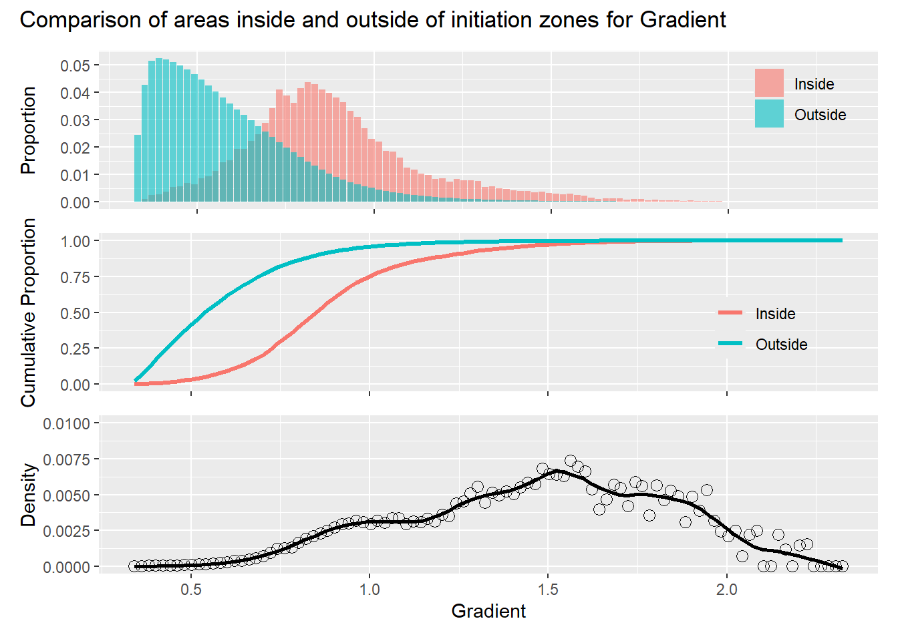
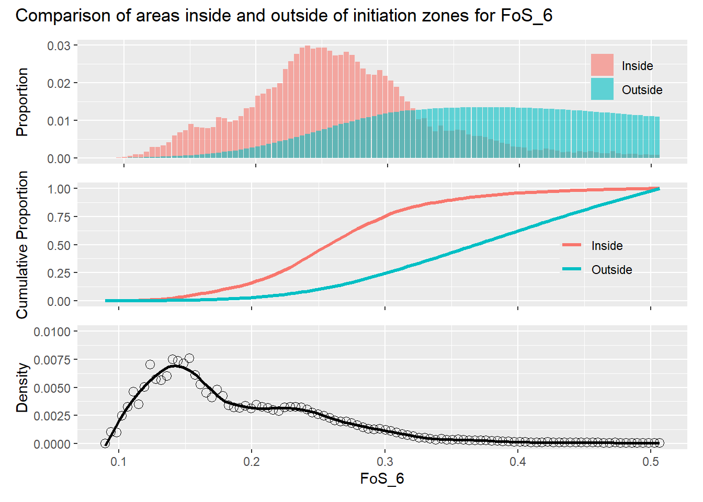
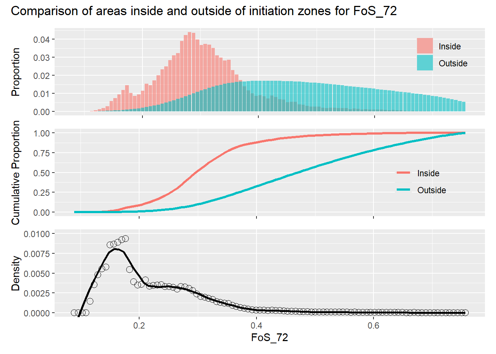
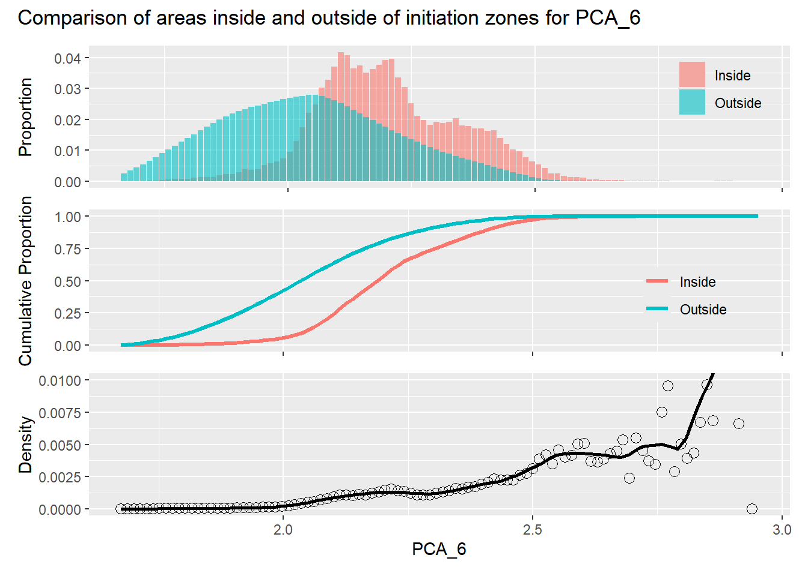
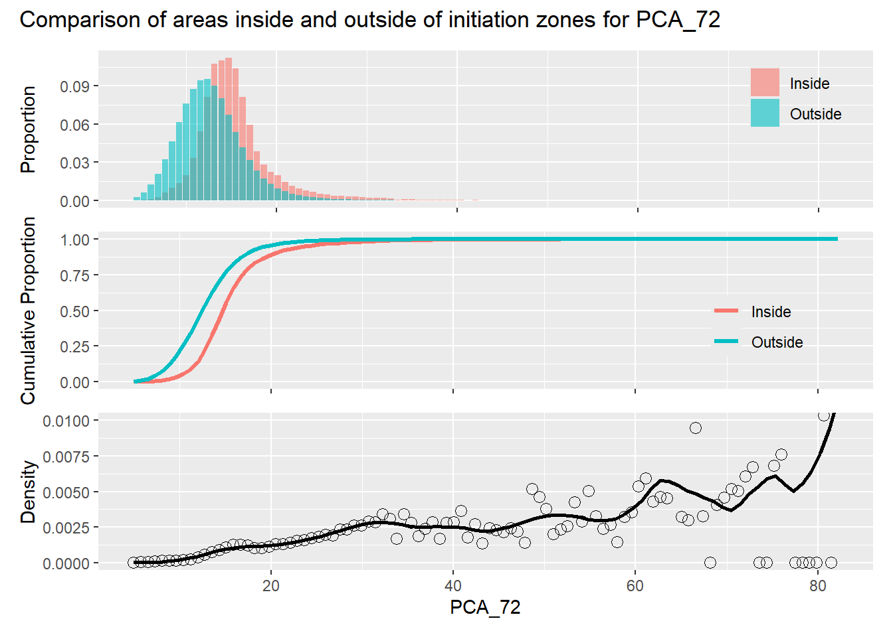
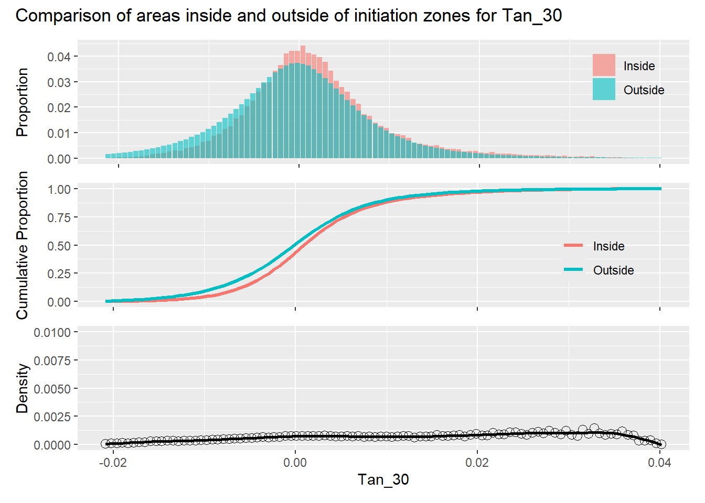
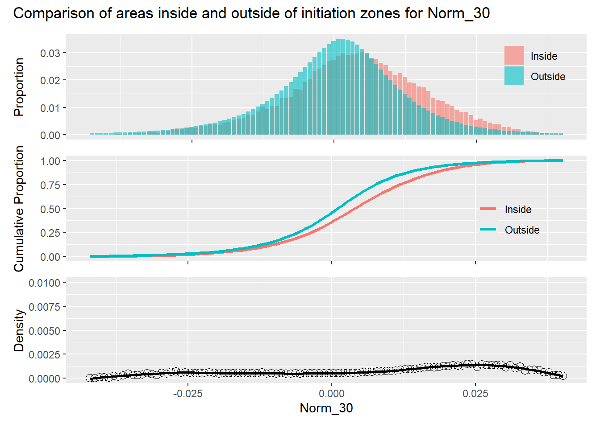
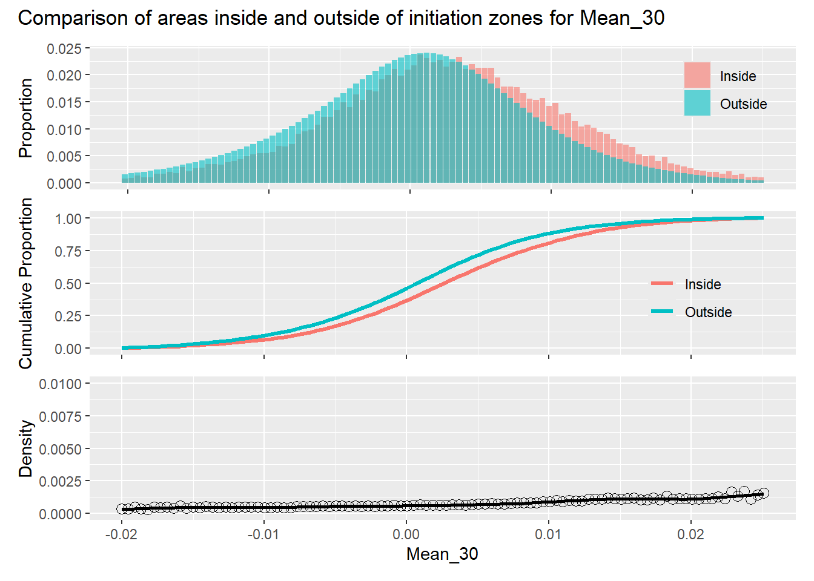
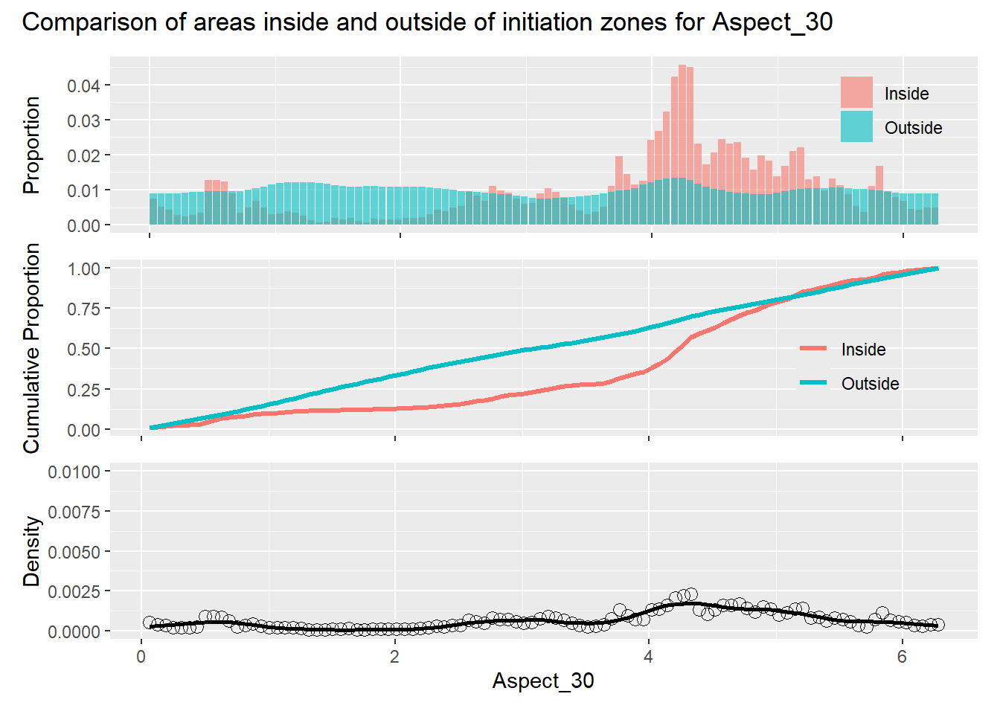
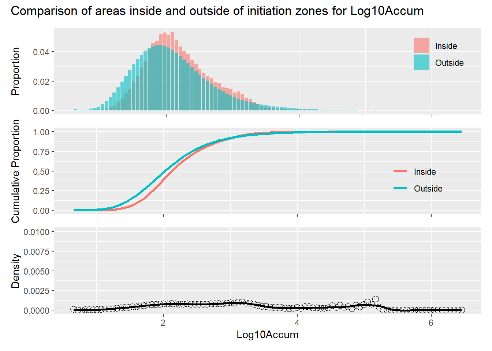
These plots show substantial differences in the degree to which these topographic indices can differentiate initiation zones. The index FoS_72 (Factor of safety calculated using saturation depth inferred from the contributing area for a 72-hour storm) exhibits the largest separation of the frequency distribution of values between the initiation zones and the masked portion of the study area, reflected in the largest range of density values.
ROC and AUC
Receiver operator curves (ROC) and area under the ROC curve (AUC) provide means to compare the ability of different predictors to differentiate areas with high landslide density from areas with lower landslide density.
For any of the indices, the integration of density over the study are gives the total area of initiation zones:
where \(A_{initiation}\) is the cumulative area of all initiation zones, \(A_T\) is total study area, and \(\rho(s)\) is spatially variable landslide density. This integral is estimated by summing the value of \(\rho\) for each DEM cell (from the histograms above) times cell area \(a\). Performing the sum over ordered \(\rho\) values shows what proportion of the study area falls at or below (or above) a given \(\rho\) value. Limiting the sum only to mapped initiation zones shows what proportion of the total initiation-zone area falls at or below (or above) a given \(\rho\) value. Plotting the proportion of initiation-zone area as a function of proportion of total study area shows what proportion of study area contains a given proportion of the mapped initiation zones, ranked by landslide density.
These curves are referred to as Receiver-Operator-Characteristic (ROC) curves, or as Success-Rate Curves (Chung and Fabbri 2003). For an index where the frequency distribution of values within the initiation zones is distinctly different than the distribution over the entire study area (masked here to include only index values where landsliding is observed), the ROC curve will start out steeply, indicating that a large portion of the initiation-zone area is contained within a small proportion of the study area. If the two frequency distributions completely overlap, the ROC curve will follow the diagonal line from zero to one, shown by the dashed line in Figure 3.
Code
library(RColorBrewer)library(forcats)# Order indices by auc valueindexOrder <-c("FoS_72", "Gradient", "FoS_6", "PCA_6", "Aspect_30", "PCA_72", "Norm_30", "Log10Accum", "Mean_30", "Tan_30")roc_dt <- roc_dt[, Index :=factor(Index, levels=indexOrder)]roc_curves <-ggplot(roc_dt, aes(x=fpr,y=tpr,color=Index)) +geom_line(linewidth=1) +geom_segment(x=0,y=0,xend=1,yend=1, color="black", linewidth=1., linetype=3) +coord_cartesian(x=c(0,1), y=c(0,1)) +labs(title ="ROC curves",x ="False Positive Rate (Proportion of masked area)",y ="True Positive Rate (Proportion of initiation-zone area)") +theme(legend.position ="inside",legend.position.inside =c(.9,.4),legend.title =element_blank(),legend.background =element_rect(fill ="transparent")) +scale_colour_brewer(palette ="Spectral")plot(roc_curves)
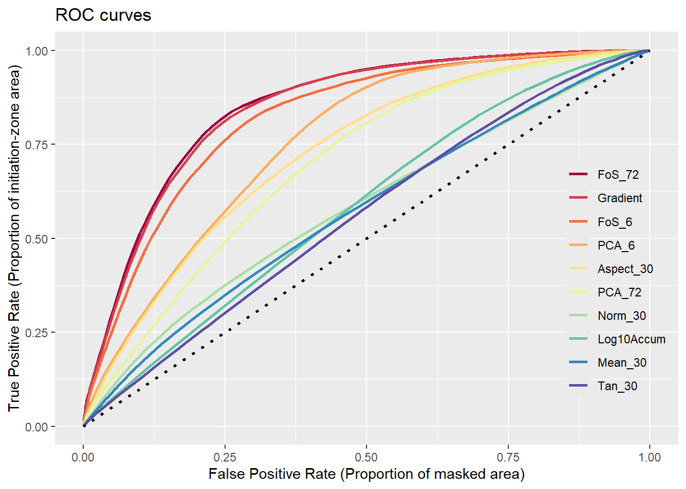
Figure 3: ROC curves for each topographic index
The area under an ROC curve (AUC) provides a measure of the degree to which an index can differentiate initiation zones from the general terrain. An AUC value of 0.5 indicates no discrimination ability, an AUC value of 1.0 indicates complete separation of the initiation-zone index values from the rest of the terrain.
Code
auc <- auc[, name :=factor(unlist(name))]aucplot <-ggplot(auc, aes(x=fct_reorder(name,-val),y=val)) +geom_col(fill="lightgray", color="black") +coord_cartesian(y=c(0.5,0.85)) +labs(title="AUC for each of the topographic indices",x ="Topographic Index",y ="Area Under the Curve")plot(aucplot)
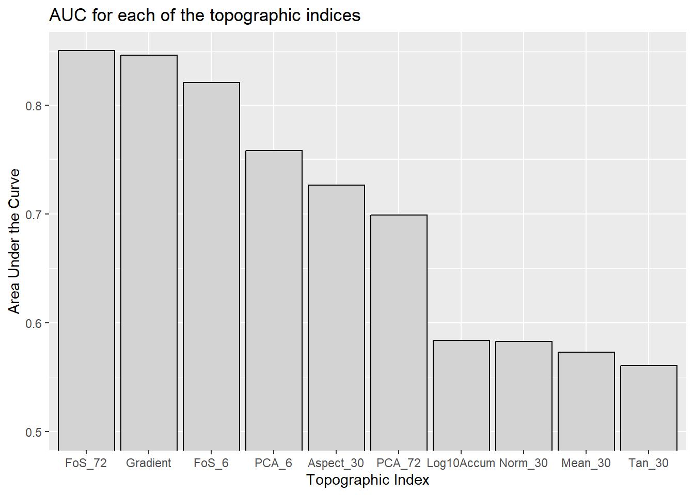
Figure 4: AUC values for each topographic index
Gradient and FoS indices all provide the largest AUC values, followed by the contributing areas and hillslope aspect. The curvatures and total contributing area all have low AUC values, indicating little discriminating ability, as shown also by the high degree of overlap of the frequency distributions shown in the plots above.
Correlation
This suggests that we could use gradient or one of the FoS models as relatively good predictors of future landslide location. However, it may be that density varies with certain combinations of indices: that there may be interactions among indices associated with variability in landslide density. For example, we may find that the density associated with FoS_72 varies with gradient, or with PCA_72, or with aspect, or with curvature, or with some combination of other indices. To explore potential interactions, we need to first ensure that the indices themselves are not correlated. For example, the calculation of FoS uses both gradient and contributing area. A change in FoS_72 value reflects changes in gradient and PCA_72 values, so including these other indices may provide little or no information that isn’t already represented by FoS_72. The next code chunk calculates correlations between each pair of index rasters, limited to the masked area.
Code
for (i in1:nlyr(rstack)) { rstack[[i]] <- rstack[[i]] * mask }corMatrix <- terra::layerCor(rstack, fun ="pearson", na.rm =TRUE)
I’ll use bar plots to examine the degree of correlation between indices. The largest AUC value is associated with FoS_72.
m <- corMatrix$correlation m_dt <-data.table(m, keep.rownames=TRUE) c_fos72 <-ggplot(m_dt, aes(x=fct_reorder(rn,-FoS_72),y=FoS_72)) +geom_col(fill='lightgray',color='black',linewidth=0.5) +labs(title="Correlation with FoS_72",x =element_blank(),y ="Pierson's coefficient")c_tan <-ggplot(m_dt, aes(x=fct_reorder(rn,-Tan_30),y=Tan_30)) +geom_col(fill='lightgray',color='black',linewidth=0.5) +labs(title="Correlation with tangential curvature",x =element_blank(),y ="Pierson's coefficient")c_plot = c_fos72 / c_tanplot(c_plot)
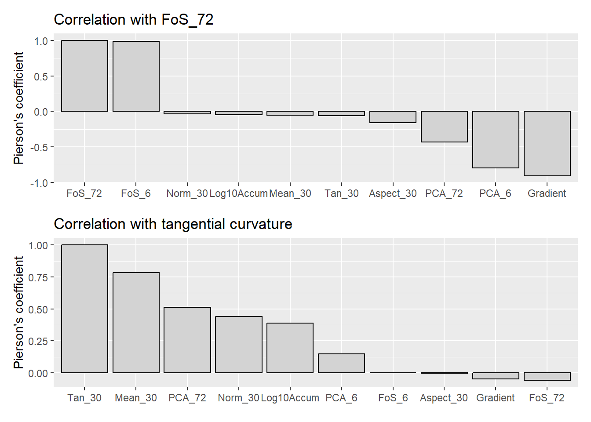
Figure 5
FoS_72 is, of course, perfectly correlated with itself, but also highly correlated with FoS_6, Gradient, and the 6-hour partial contributing area indices. Correlation with curvature, total accumulation area, and aspect are all low, so interactions of these indices with FoS_72 may be worth exploring.
Directly binning covariate values works adequately for a single predictor. It may be, however, predictors act in combination to determine where landslides occur. Perhaps, for example, the density associated with a calculated FoS value varies with the upslope contributing area. To estimate the density of landslide initiation zones over multiple predictors requires binning in a multidimensional covariate data space. We may find we have insufficient data to adequately fill the bins. I’ll explore two alternatives for calculating landslide density as a function of one or more predictors: the use of spatial point process models, as used for presence-only data analysis, and subsampling of the predictors used to train a classification model.
References
Chung, Chang Jo, and Andrea G. Fabbri. 2003. “Validation of Spatial Prediction Models for Landslide Hazard Mapping.”Natural Hazards 30: 451–72.